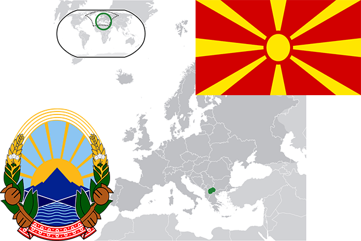

To`liq nomi: Makedoniya Respublikasi
Region: Janubiy-sharqiy Yevropa
Qonunchilik shakli: Respublika
Mustaqillik kuni: 8-sentabr 1991-yil (Yugoslaviyadan)
Poytaxt: Skope
Maydoni: 25 333 km² (dunyoda 145 -o`rinda )
Chegaradosh davlatlari: Albaniya, Serbiya, Bolgariya, Gretsiya
Aholisi: 2,073,702 (dunyoda 146 - o`rinda, 2016 -yil roʻyxat)
Aholi zichligi: 81/km²
Aholining o`rtacha yoshi: 74,3 yil (76,9 ayollar, 71,7 erkaklar)
Rasmiy tili: Alban va Makedon tillari
Dini: Pravoslav
Pul birligi: Makedoniya dinori
Telefon prefiksi: +389
Internet domen: .mk
Xalqaro tashkilotlarga a`zoligi: BMT (1993 – yildan)
Dengiz va okeanlarga chiqishi: yo`q
YIM: Butun: $ 30.377 mlrd, Jon boshiga $ 14,631 (2016 - yil roʻyxati)
Yirik shaharlari: Skope, Kumanovo, Bitola